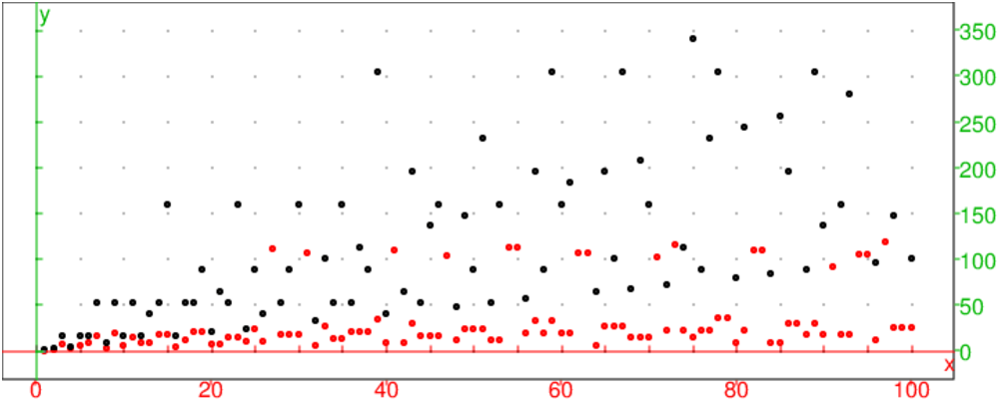
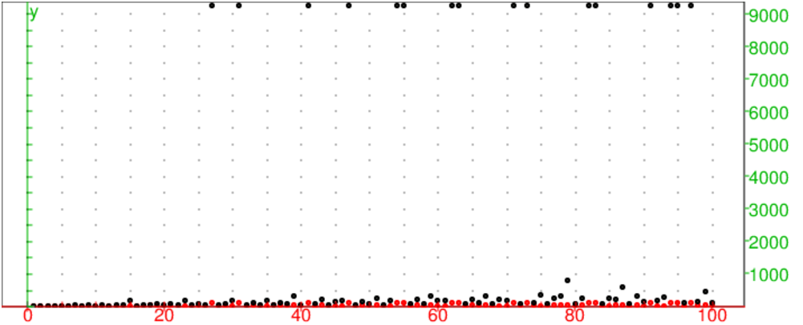

On considère la suite un=∑j=1n1/j.
La solution
u2n−un= 1/n+1+..+1/n+n et on a :
1/n+n≤ 1/n+k pour k=1..n.
u2n−un a donc n termes et chaque terme est supérieur ou égal à
1/2n donc
u2n−un≥ n/2n=1/2.
Donc u2n−un ne tend pas vers zéro quand n tend vers +∞ donc un n’est pas convergente. Comme un est croissante et non convergente,
un n’est pas bornée donc un tend vers +∞ quand n tend vers
+∞
L’algorithme en langage naturel
Entrée : p entier
Variables : j entier,S reel
Initialisation : Affecter à S la valeur 0
Affecter à j la valeur 0
Traitement : Tant que S<p faire
Affecter à j la valeur j+1
Affecter à S la valeur S+1/j
FinTantque
Sortie : j
La solution en langage Xcas
harmonique(p):={
local j, S;
S:=0;
j:=0;
tantque S<p faire
j:=j+1;
S:=S+1/j;
ftantque;
retoune j;
}:;
On tape :
harmonique(3)
On obtient :
11
On tape :
harmonique(5)
On obtient :
83
On tape :
harmonique(10)
On obtient :
12367
On tape : harmonique(11)
On obtient :
33617
Lors de la naissance de Pierre son grand-père dépose sur un compte bancaire 100 euros. À chaque anniversaire de Pierre, il dépose sur ce compte 100 euros auquel il ajoute le double de l’age de Pierre.
La solution en langage naturel
Montant du compte lorsque Pierre a n ans :
Entrée : n entier
Variables : S reel, j entier
Initialisation : Affecter à S la valeur 100
Traitement : Pour j allant de 1 à n faire
Affecter à S la valeur S+100+2*j
FinPour
Sortie : S
Somme disponible>P et age correspondant de Pierre
Entrée : P reel
Variables : S reel, j entier
Initialisation : Affecter à S la valeur 100
Affecter à j la valeur 0
Traitement : Tantque S<P
Affecter à j la valeur j+1
Affecter à S la valeur S+100+2*j
FinTantque
Sortie : S,j
Si le compte rapporte 2.5% par an, on écrira dans le traitement des deux
algorithmes précédents :
Affecter à S la valeur S*1.0.25+100+2*j (au lieu de
Affecter à S la valeur S+100+2*j)
Éventuellement on renverra la valeur de S arrondie avec seulement 2
chiffres après la virgule (evalf(S,2)).
La solution en langage Xcas
banque(n):={
//Montant du compte lorsque Pierre a n ans
local S,j;
S:=100;
pour j de 1 jusque n faire
S:=S+100+2*j;
fpour;
retourne S;
}:;
banques(P):={
//Somme disponible>=P et age correspondant de Pierre
local S,j;
S:=100;
j:=0;
tantque S<P faire
j:=j+1;
S:=S+100+2*j;
ftantque;
retourne S,j;
}:;
banquier(n):={
//On applique un interet de 2.5 pour cent
//Montant du compte lorsque Pierre a n ans
local S,j;
S:=100;
pour j de 1 jusque n faire
S:=S*1.025+100+2*j;
fpour;
retourne evalf(S,2);
}:;
banquiers(P):={
//On applique un interet de 2.5 pour cent
//Somme disponible>=P et age correspondant de Pierre
local S,j;
S:=100;
j:=0;
tantque S<P faire
j:=j+1;
S:=S*1.025+100+2*j;
ftantque;
retourne evalf(S,2),j;
}:;
On tape :
banque(10)
On obtient :
1210
On tape :
banques(2000)
On obtient :
2106,17
On tape :
banquier(10)
On obtient :
1367.02
On tape :
banquiers(2000)
On obtient :
2027.75,14
Soit a un entier positif. On veut étudier la suite de
Syracuse définie par :
u0=a
un=un−1/2 si un−1 est pair
un=3*un−1+1 si un−1 est impair.
Cette suite se termine toujours (???) par 1, 4, 2, 1, 4, 2, 1... mais on ne sait pas
le démontrer !!!
La solution en langage naturel
Algorithme qui renvoie n. n est la première valeur de k
pour laquelle uk=1
Entrée : a
Variables : k
Initialisation : Affecter à k la valeur 0
Traitement : Tant que a!=1 faire
Si a est pair alors
Affecter à a la valeur a/2
Sinon
Affecter à a la valeur 3a+1
FinSi
Affecter à k la valeur k+1
FinTantque
Sortie : k
Algorithme qui renvoie m,n où m est la plus grande valeur prise par uk lorsque k=0..n et n est la première valeur de k pour laquelle uk=1
Entrée : a
Variables : k,m
Initialisation : Affecter à m la valeur a
Affecter à k la valeur 0
Traitement : Tant que a!=1 faire
Si a est pair alors
Affecter à a la valeur a/2
Sinon
Affecter à a la valeur 3a+1
Si a>m alors Affecter à m la valeur a
FinSi
Affecter à k la valeur k+1
FinTantque
Sortie : m,k
La solution en langage Xcas
syracuse(a):={
local k,m;
k:=0;
m:=a;
tantque a!=1 faire
si irem(a,2)==0 alors
a:=iquo(a,2);
sinon
a:=a*3+1;
si a>m alors m:=a; fsi;
fsi;
k:=k+1;
ftantque;
retourne m,k;
}:;
On tape :
syracuse(3)
On obtient :
16,7
On tape :
syracuse(5)
On obtient :
16,5
On tape :
syracuse(7)
On obtient :
52,16
On tape :
syracuse(75)
On obtient :
340,14
On tape :
syracuse(97)
On obtient :
9232,118
On tape le programme qui affiche en rouge les points (a,n) et en noir les
points (a,m) lorsque a=1..100.
syracuse100():={
local a,n,m,L;
L:=NULL;
pour a de 1 jusque 100 faire
m,n:=syracuse(a);
L:=L,point(a,n,affichage=1),point(a,m,affichage=1);
fpour;
retourne L;
}:;
On tape :
syracuse100() et on obtient :

Mais en changeant le repère, on voit les points tels que point(97,9232)

On considère la fonction f(x)=xex−1 sur ℝ.
Entrée : f la fonction pr\'ec\'edente
n un entier
Variables : a,b,m,p
Initialisation : Affecter à a la valeur 0
Affecter à b la valeur 1
Traitement : Tant que b-a>10^-n faire
Affecter à m la valeur (a+b)/2
Affecter à p la valeur f(a)*f(m)
Si p>0
Affecter à a la valeur m
Sinon
Affecter à b la valeur m
FinSi
FinTantque
Sortie : a,b
On fait fonctionner cet algorithme avec n=1.
La solution
On a f(0)=−1 et f(1)≃ 1.71828182846
Sur ]−∞;0] f(x)=xex−1≤ −1<0 donc f ne s’annule pas.
La fonction f est continue et est strictement croissante sur [0;+∞[
puisque sa derivée f′(x)=ex(x+1) est négative sur ]−∞;−1[ et
positive sur ]−1;+∞[.
Donc d’après le théorème des valeurs intermédiaires f(x)=0 a une
solution unique comprise entre 0 et 1 puisque f(0)<0 et f(1)>0.
L’algorithme trouve un encadrement de longueur inférieure à 1O−n de
cette solution : a chaque étape on partage l’intervalle [a;b] en deux
(dichotomie). Si m est le milieu de [a;b], on regarde si f(a) et f(m)
sont de même signe : si oui, m peut remplacer a et sinon m peut
remplacer b et le zéro se trouve toujours entre a et b.
Lorsque n=1 cet encadrement est de longueur 0,1
Initialisation : a=0 et b=1
Etape 1 : m=0.5, p=f(0)f(0.5)=0.17563936465, a=0.5, b=1
Etape 2 : m=0.75, p=f(0.5)f(0.75)=−0.103232038761, a=0.5, b=0.75
Etape 3 : m=0.625, p=f(0.5)f(0.625)=−0.02944659346,a=0.5, b=0.625
Etape 4 : m=0.5625, p=f(0.5)f(0.5625)=0.002244979408,a=0.5625, b=0.625
Résultat : 0.5625,0.625
Arrêt du tantque car (b−a)<0.1 et le résultat est donc 0.5625,0.625.
La traduction en langage Xcas
dichotomie(f,n):={
local a,b,m,p;
a:=0.;
b:=1.;
tantque b-a>10^-n faire
m:=(a+b)/2;
p:=f(a)*f(m);
si p>0 alors
a:=m;
sinon
b:=m;
fsi;
ftantque;
retourne a,b;
}:;
On tape :
dichotomie(f,1)
On obtient :
0.5625,0.6250
On tape :
dichotomie(f,2)
On obtient :
0.5625,0.5703125
On tape :
dichotomie(f,5)
On obtient :
0.567138671875,0.56714630127
Compléments
Dans la fonction dichotomie si dessus on a supposé que la fonction
f avait un zéro sur ]0.0,1.0[. Voici une fonction dichotomie
plus générale que je nomme dichotom
dichotom(f,a,b,n):={
local m,p;
a:=evalf(a);b:=evalf(b);
si a>b alors m:=b;b:=a;a:=m; fsi;
p:=f(b)*f(a);
si p>0 alors return("f(",a,")*f(",b,")>0"); fsi;
DIGITS:=n+2;
tantque (b-a)>10.0^-n faire
m:=(a+b)/2;
p:=f(a)*f(m);
si p>0 alors
a:=m;
sinon
b:=m;
fsi;
ftantque ;
retourne a,b;
}:;
On tape :
f(x):=x*exp(x)-1;
dichotom(f,0,1,15)
On obtient :
0.56714329040978351
On tape :
dichotom(f,2,1,5)
On obtient :
"f(",1.0,")*f(",2.0,")>0"
Entrée : n un entier
Variables : u,S,j
Initialisation : Affecter à u la valeur 1
Affecter à S la valeur 1
Affecter à j la valeur 0
Traitement : Tant que j<n faire
Affecter à u la valeur 2u+1-j
Affecter à S la valeur S+u
Affecter à j la valeur j+1
FinTantque
Sortie : u,S
Justifier que pour n=3, le résultat de cet algorithme est 11,21
La solution
Pour n=3, on a :
Initialisation : u=1, S=1, j=0
Etape 1 : u=3, S=4, j=1
Etape 2 : u=6, S=10, j=2
Etape 3 : u=11, S=21, j=3
Résultat : 11,21
Arrêt du tantque car j>=3 et le résultat est donc 11,21.
Dans le corps du tantque on calcule u,S et j et on a u=uj et S=Sj.
Lorsque j=n le tantque s’arrête et renvoie un,Sn.
La traduction en langage Xcas
suiteserie(n):= {
local u,S,j;
u:=1;
S:=1;
j:=0;
tantque j<n faire
u:=2u+1-j;
S:=S+u;
j:=j+1;
ftantque;
retourne u,S
}:;
On veut trouver un en fonction de n, on modifie l’algorithme pour qu’il
renvoie aussi un−n, on modifie seulement la sortie en u,s-n,S
Pour n=0, on a :
Initialisation : u=1, S=1, j=0
Résultat : 1,1,1
Pour n=1, on a :
Initialisation : u=1, S=1, j=0
Etape 1 : u=3, S=4, j=1
Résultat : 3,2,4
Pour n=2, on a :
Initialisation : u=1, S=1, j=0
Etape 1 : u=3, S=4, j=1
Etape 2 : u=6, S=10, j=2
Résultat : 6,4,10
Pour n=3, on a :
Initialisation : u=1, S=1, j=0
Etape 1 : u=3, S=4, j=1
Etape 2 : u=6, S=10, j=2
Etape 3 : u=11, S=21, j=3
Résultat : 11,8,21
Il semble que un−n=2n.
On a en effet un+1−(n+1)=2un+1−n−(n+1)=2(un−n).
On a 1+2+..+n=n(n+1)/2 et 1+2+22+..+2n=2n+1−1
Donc Sn=n(n+1)/2+2n+1−1
On vérifie pour n=3 u3=23+3=8+3=11 et S3=6+24−1=16+5=21
On a bien u5=25+5=32+5=37 et S5=5*3+64−1=78
On tape :
suiteserie(3)
On obtient :
11,21
On tape :
suiteserie(5)
On obtient :
37,78
Remarque
Il me semble préférable d’écrire cet algorithme avec un pour.
Mais attention !!!
On doit utiliser la relation de récurrence sous la forme :
un=2un−1+2−n ou bien un+1=2un+2−(n+1)
car dans le corps du
pour on calcule successivement :
u1,S1 lorsque j=1, u2,S2
lorsque j=2 et un,Sn lorsque j=n.
Alors que précédement avec tantque,
on utilise la relation un+1=2un+1−n car on
calcule successivement u1,S1 lorsque j=0, u2,S2
lorsque j=1 et un,Sn lorsque j=n−1 et c’est pourquoi la condition
d’arrêt du tantque est j<n.
On tape :
suiteserie1(n):= {
local u,S,j;
u:=1;
S:=1;
pour j de 1 jusque n faire
u:=2u+2-j;
S:=S+u;
fpour;
retourne u,u-n,S
}:;
On considère la fonction f(x)=4ex/2−5 sur ℝ.
On note Cf le graphe de f dans un repère orthogonal
Entrée : f la fonction precedente
p un réel >0
Variables : a,b
Initialisation : Affecter à a la valeur 0
Affecter à b la valeur -1
Traitement : Tant que b<0 faire
Affecter à a la valeur a+p
Affecter à b la valeur f(a)
FinTantque
Sortie : a-p,a
Que fait cet algorithme ?
La solution et traduction en langage Xcas
On a f(0)=−1 et f(1)≃ 1.5948850828
La fonction f est continue et est strictement croissante sur ℝ puisque sa
derivé qui vaut f′(x)=2ex/2 est positive.
Donc d’après le théorème des valeurs intermédiaires f(x)=0 a une
solution unique comprise entre 0 et 1 puisque f(0)<0 et f(1)>0.
L’algorithme trouve un encadrement de longueur p de cette solution.
Lorsque p=1 cet encadrement est 0,1
Lorsque p=0.1 cet encadrement est 0.4,0.5 car f(0.4)≃ −0.114388967359<0 et f(0.5)≃ 0.136101666751>0
Lorsque p=0.1 cet encadrement est 0.44,0.45 car f(0.44)≃ −0.0156930776507<0 et f(0.45)≃ 0.00929086476731>0
Avec Xcas, on tape pour définir la fonction f :
f(x):=4*exp(x/2)-5)
On tape la traduction de l’algorithme avec Xcas :
zeroapprox(f,p):={
local a,b;
a:=0;
b:=f(a);
tantque b<0 faire
a:=a+p;
b:=f(a);
ftantque;
retourne a-p,a
}:;
On tape :
zeroapprox(f,0.1)
On obtient :
0.4,0.5
On tape :
zeroapprox(f,0.01)
On obtient :
0.44,0.45
On tape :
zeroapprox(f,0.001)
On obtient :
0.445999999998,0.446999999998
On tape :
zeroapprox(f,0.0001)
On obtient :
0.446199999974,0.446299999974
On remarquera que cet algorithme est
valable pour toutes les fonctions continues f qui vérifient
f(0)<0 et f(1)>0.
Remarque
Ce programme est moins performant que le programme de dichotomie vu
précédemment.
Soit (un ) la suite définie pour tout entier strictement positif par :
| un = 1 + |
| + |
| ...+ |
| −ln(n) |
Entrée : l'entier n
Variables : j est un entier
u est un réel
Initialisation : Affecter à u la valeur 0
Traitement : Pour j variant de 1 à n
Affecter à u la valeur u +1/j
fPour
Sortie : Afficher u
Donner la valeur exacte affichée par cet algorithme lorsque l’utilisateur
entre la valeur n=3.
| n | 6 | 7 | 8 | 9 | 10 | 100 | 1000 | 1500 | 2000 |
| un | 0.658 | 0.647 | 0.638 | 0.632 | 0.626 | 0.582 | 0.578 | 0.578 | 0.577 |
La solution et la traduction avec Xcas
Le but de l’exercice est de trouver une approximation de la constante
d’Euler :
γ=limn → +∞(1+1/2+1/3...+1/n−ln(n)).
On montre dans un premier temps que cette limite existe car :
un est décroissante en effet
un+1−un=1/n+1+ln(n/n+1)<0 et
l’étude de f(x)=1/x+1+ln(x/x+1) montre que
f est négative sur [1;+∞[.
de plus un est minorée par 0. En effet pour p∈ ℕ*,on a :
∫x=px=p+1dx/x=ln(p+1)−ln(p)<1/p
En sommant cette inégalité pour p=1..n on a :
ln(n+1)<1+1/2+1/3...+1/n donc
0<ln(1+1/n)<1+1/2+1/3...+1/n−1+1/n−ln(n)
Ainsi un est décroissante et minorée par 0 elle a donc une limite
positive appelée "constante d’Euler".
L’algorithme calcule 1+1/2+1/3...+1/n
Pour n=3
Initialisation : u=0
Etape 1 : j=1, u=1
Etape 2 : j=2, u=3/2
Etape 3 : j=3, u=11/6
Resultat : 11/6 ou 1.83333333333
On modifie l’algorithme pour qu’il affiche la suite un=1+1/2+...+1/n−ln(n), pour cela, il suffit de modifier la sortie :
Entrée : l'entier n
Variables : j et n sont des entiers naturels
u est un réel
Initialisation : Affecter à u la valeur 0
Traitement : Pour j variant de 1 à n
Affecter à u la valeur u +1/j
fPour
Sortie : Afficher u-ln(n)
La traduction avec Xcas
On retourne une valeur numérique grâce à evalf(u) qui transforme le
rationnel u en un nombre décimal.
csteuler(n):={
local j, u;
u:=0;
pour j de 1 jusque n faire
u:=u+1/j;
fpour;
retourne evalf(u)-ln(n);
}:;
On tape :
csteuler(10)
On obtient :
0.626383160974
On tape :
csteuler(100)
On obtient :
0.582207331651
On tape :
csteuler(1000)
On obtient :
0.577715581568
On tape :
csteuler(2000)
On obtient :
0.577465644068
On tape :
csteuler(20000)
On obtient :
0.577240664693
Cela montre que la constante d’Euler est proche de 0.577240664693.
On tape car Xcas connait cette constante :
evalf(euler_gamma)
On obtient :
0.5772156649018
Remarque
Les deux variantes de csteuler écrites ci-dessous font à chaque
étape un calcul numérique car on a mis 1./j au lieu de 1/j.
csteuler0 calcule la somme des 1/k pour k allant de 1 à n, alors que
csteuler1 calcule la somme des 1/k pour k allant de n à 1
csteuler0(n):={
local j, u;
u:=0;
pour j de 1 jusque n faire
u:=u+1./j;
fpour;
retourne u-ln(n);
}
:;
csteuler1(n):={
local j, u;
u:=0;
pour j de n jusque 1 pas -1 faire
u:=u+1./j;
fpour;
retourne u-ln(n);
}:;
On tape :
csteuler0(2000)
On obtient :
0.577465643831
On tape :
csteuler1(2000)
On obtient :
0.577465644032
On tape :
csteuler(2000)
On obtient :
0.577465644068
Il faut comprendre la différence des résultats obtenus entre les
fonctions csteuler0, csteuler1 et csteuler :
csteuler1 donne un résultat meilleur que csteuler0 car il
commence par ajouter des petits nombres donc la somme conserve plus de
décimales.
Le résultat de csteuler est encore meilleur car il ne fait
l’approximation décimale qu’à la fin du programme.
Soit la suite un=1+4+..+n2.
Écrire un algorithme qui calcule un en fonction de n.
Puis calculer successivement un/n et un/(n(n+1)) pour n=1..10
Montrer que un=n(n+1)(2n+1)/6
La solution
On écrit l’algorithme :
Entrée : l'entier n
Variables : j est un entier
S est un réel
Initialisation : Affecter à S la valeur 0
Traitement : Pour j variant de 1 à n
Affecter à S la valeur S+j^2
fPour
Sortie : Afficher S
Avec Xcas :
Scarre(n):={
local j,S;
S:=0;
pour j de 1 jusque n faire
S:=S+j^2;
fpour
retourne S;
}:;
On tape :
Scarre(p)$(p=0..10)
On obtient :
0,1,5,14,30,55,91,140,204,285,385
On tape :
(Scarre(p)/p)$(p=0..10)
On obtient :
1,5/2,14/3,15/2,11,91/6,20,51/2,95/3,77/2
On tape :
(Scarre(p)/(p*(p+1)))$(p=1..10)
On obtient :
1/2,5/6,7/6,3/2,11/6,13/6,5/2,17/6,19/6,7/2
On tape :
((2p+1)/6)$(p=1..10) et
on obtient le résultat précédent.
Il reste donc à démontrer par récurrence que :
un=1+22+..+n2=n(n+1)(2n+1)/6
Écrire un algorithme qui calcule un=1+1/4+..+1/n2 en fonction de n.
La solution : on écrit l’algorithme :
Entrée : l'entier n>=1
Variables : j un entier, S un réel
Initialisation : Affecter à S la valeur 0
Traitement : Pour j variant de 1 à n
Affecter à S la valeur S+1/j^2
fPour
Sortie : Afficher S
Avec Xcas
Scarre(n):={
local j,S;
S:=0;
pour j de 1 jusque n faire
S:=S+1/j^2;
fpour
retourne S;
}:;
On tape :
Sinvcarre(p)$(p=1..9)
On obtient :
1,5/4,49/36,205/144,5269/3600,5369/3600,
266681/176400,1077749/705600,9778141/6350400
On tape :
evalf(Sinvcarre(p))$(p=0..9)
On obtient :
1.0,1.25,1.36111111111,1.42361111111,1.46361111111,
1.49138888889,1.51179705215,1.52742205215,1.53976773117,
On tape (on admet que un tend vers π2/6 quand n tend vers +∞) :
sqrt(6.*Sinvcarre(1000))
On obtient :
3.14063805621
La suite de Fibonacci un est définie par :
u0=1, u1=1, un+2=un+1+un pour n∈ ℕ
Écrire un algorithme qui calcule un en fonction de n.
La solution : on écrit l’algorithme :
Entrée : l'entier n.
Variables : j,a,b,c sont des entiers
Initialisation : Affecter à a la valeur 1
Affecter à b la valeur 1
Traitement : Pour j variant de 2 à n
Affecter à c la valeur a+b
Affecter à a la valeur b
Affecter à b la valeur c
fPour
Sortie : Afficher b
Avec Xcas
fibo(n):={
local j,a,b,c;
a:=1;
b:=1;
pour j de 2 jusque n faire
c:=a+b;
a:=b;
b:=c;
fpour;
retourne b;
}:;
On tape :
fibo(p)$(p=0..10)
On obtient les 11 premiers termes de la suite de Fibonacci :
1,1,2,3,5,8,13,21,34,55,89
On tape :
fibo(101)/fibo(100)
On obtient :
927372692193078999176/573147844013817084101
On tape :
evalf(fibo(101)/fibo(100)),(1+sqrt(5))/2.
On obtient :
1.61803398875, 1.61803398875
Il reste à montrer que vn=un+1/un tend vers à
1+√5/2 qui est le nombre d’or.